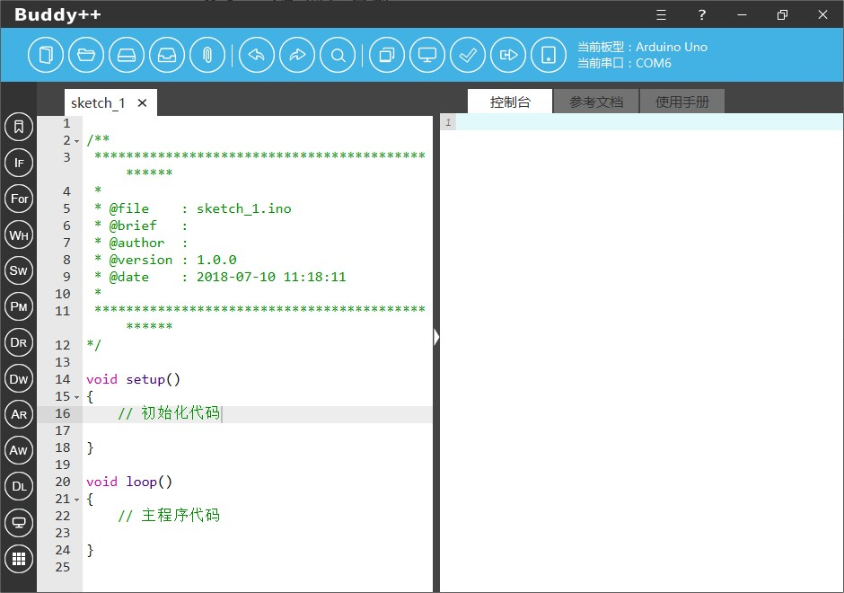
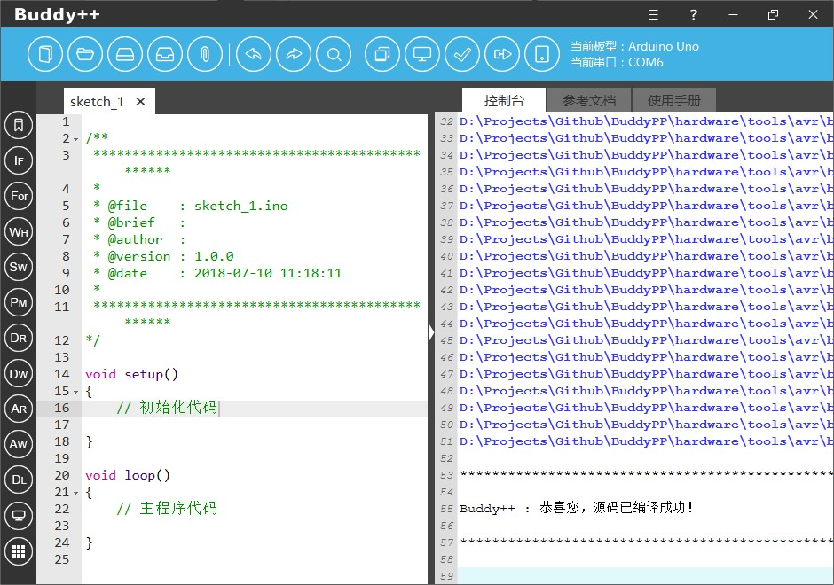
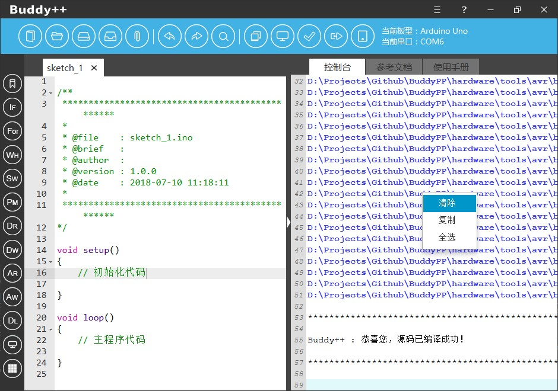
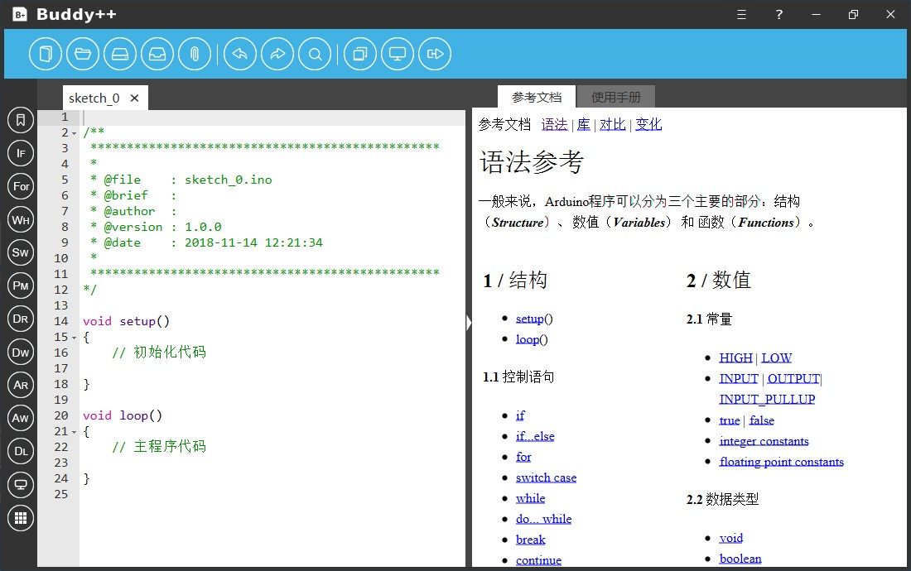
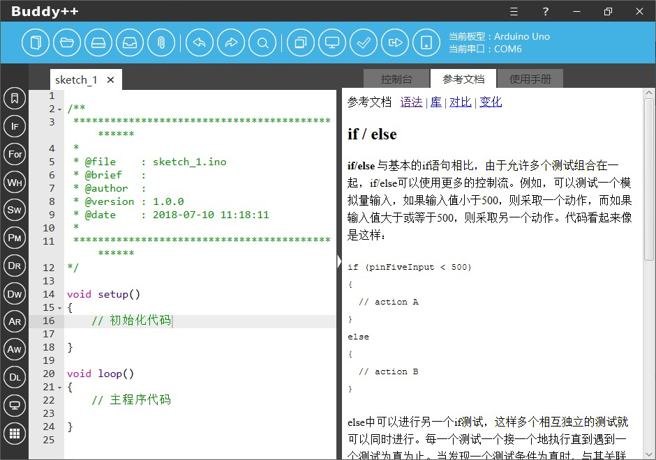

在Buddy++主界面的右侧我们设计了一个可扩展的信息栏，信息栏在默认情况下是收起的状态，用户点击小箭头图标信息栏则往左扩展，开发者也可以通过拖动的方式设置信息栏占用的空间比例，如果完成浏览再次点击小箭头图标信息栏即可完全收起。

信息栏主要由三个不可关闭的标签页面板组成，其分别为控制台、参考文档、使用手册，以下详细介绍。
当用户点击编译或烧录按钮时，右侧默认收起的信息栏将会自动往左侧扩展，控制台标签页会自动被激活。开发者将可以通过该标签页查看当前程序的动态编译信息和烧录操作输出的信息。当编译或烧录的过程出现意外状况，开发者可以通过对控制台输出信息进行分析以作判断，查看后点击小箭头图标即可收起信息栏。


Buddy++为开发者提供Arduino官方的编程参考文档，为方便广大的入门开发者，文档的大部分内容被我们翻译成简易的中文，文档主要包含语法参考、数值、基础函数和库应用等，开发者可以一边进行代码编写，一边参看帮助文档。


为了方便广大开发者，我们在信息栏还提供了Buddy++的软件使用手册，开发者可以参考使用手册快速入门Buddy++。